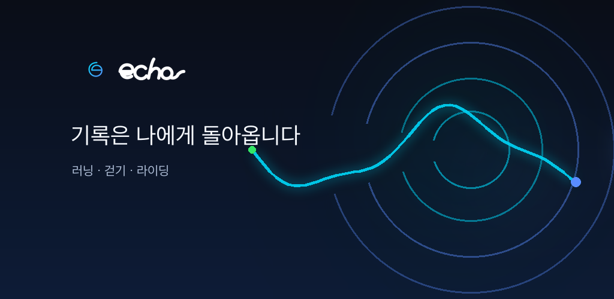

GPS 운동 기록
러닝·걷기·자전거의 경로, 거리, 시간, 페이스 또는 속도와 예상 칼로리를 기록합니다.
Every movement returns to you
러닝, 걷기, 자전거 라이딩의 GPS 경로와 페이스를 기록하고 날씨, 통계와 도전 과제로 나만의 변화를 돌아보세요.

Designed for your own progress
러닝·걷기·자전거의 경로, 거리, 시간, 페이스 또는 속도와 예상 칼로리를 기록합니다.
현재 위치의 기상청 예보와 월간 통계, 개인 기록, 도전 진행률을 한곳에서 확인합니다.
상세 운동 기록은 기기에 저장하고, 이용 분석·진단·알림은 각각 사용자가 선택합니다.
Echo는 평소 이동 경로를 기록하지 않습니다. 현재 위치 날씨를 확인하거나 사용자가 운동 기록을 시작한 경우에만 필요한 위치 기능을 사용합니다.
현재 Android 및 Apple 플랫폼 테스트 버전을 준비하고 있습니다. 이 페이지에서 공개 정책과 지원 정보를 계속 최신 상태로 제공합니다.